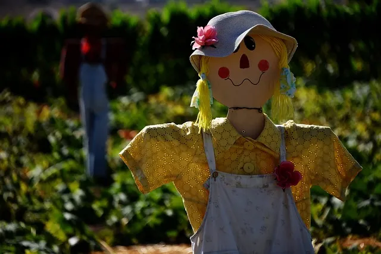
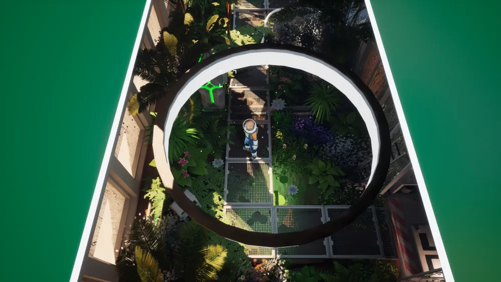
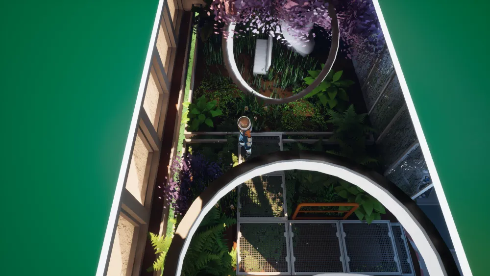
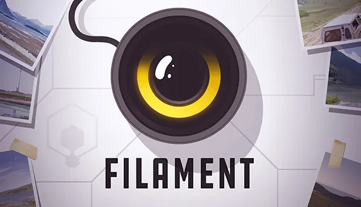

FILAMENT
ストーリー・解説
※ 解説はストーリー・メール・日誌など、すべて含んだネタバレがあります。
#00
イントロ
警告 宇宙船に接近中
[カタカタ…]
識別信号より フィラメント社所属と判明
[カタカタ…]
乗組員 検知なし
注意勧告
最低距離 200海里を推奨
航路を再設定…
[カタカタ…]
宇宙船に接近中
[カタカタ…]
ドッキング要求 保留中…
[カタカタ…]
オーバーライド 承認
小惑星を含む写真をクリックして下さい
[カチカチッ]
ドッキングプログラム 初期化完了3
2
1ドッキング 完了
目的地へようこそ
close
#01
区画にて ①
おやおや、見てみろよ！ 侵入者だ！
君は、少し… 小汚いね。颯爽と現れた白馬の騎士さまにしては。
少なくとも、ツナギにマスタードのシミなんかない奴に助けてほしかった。
でも君が、船から脱出する唯一の手段かもしれないから、我慢しとくよ。コックピットに閉じ込められて数週間、このクソ端末が反応したのは、これが初めて。
君がアンカーに何したか知らないけど、それが効いたみたい。悪いけど壁際のもチェックしてくれる？ どうもありがと。
close
#02
区画にて ②
へえ、やるじゃん。素質あるよ君。
完全にシャットダウンか、考えてみたら最適解だ。あいつらのアンカー設置が、まさかここまで船のシステムに干渉するとは思わなかった。
そっちの回路、焼き切っちゃったみたいだね？
ま、おかげで君の区画にアクセス可能になったみたい。会ったばかりだし、散々侮辱したくせに無茶なお願いするけどさ、
その調子でアンカーを停止してってくれたら、
私はここから、生きて出られるかもしれない。 どうかな？あ、ドア開けてあげるね。
close
#03
名前

ちなみに、私の名前はジュニパー。
君は名乗る気ないみたいだし、私がつけてあげるよ。フィラメント社の規定だと、忠実なメンバー全員に、色にちなんだコードネームが付与される。
でも残念、誰も君に「色はひとつに絞れ」と教えてあげなかったみたい。正直、君の恰好はやや散々なありさま。別の方法で名前を考えなきゃ。
赤と青はヒーローの色、そして君は私のヒーロー…
でもそのふたつは使用済。
それに悪いけど、君じゃあバーミリオンと、この私には敵わない。そういえば子供の頃、大好きで何度も読み返した本がある。
主人公はプルートっていう、人付き合いが苦手だけど、やる気だけはあるクマ。
一生懸命ではあったね。だから君のことはこう呼ぶことにしよう、プルート。
うん、気に入った。
名前をつける
ピスタチオは、子猫や惑星の地形にヘン…… 唯一無二な名前をつけて、そのもの自体に意味を見つけようとした。
逆にTFCは、それをコードネームで奪い去る（人間を番号で呼ぶのと同じ）。
ジュニパーはどっちだろう。#41につづく。
プルート（冥王星）
冥王星は、太陽系惑星から外れた星。
TFCの規律から外れた者、こんな深宇宙までぶらりと一人で来るはぐれ者ってとこかな。
衛星カロンから見た冥王星。Image by 25735928 from Pixabay
close
#04
船員たち ① ／自分はここにいる
数週間、独り言だけだった。
誰かが聞いてくれるのは、本当にいい気分だ。自分はここにいるって肯定されてる感じ。わかる？
ぐらつく足を地面に繋ぐのは、観客だったんだ。あいつらが周りにいた頃は… 家族みたいでさ。
あんな感じ、ずいぶん久しぶりだったのに。今はもう、誰もいない。夢か、ぼんやりした記憶みたい。もしかして現実じゃなかったのかな。
君は、本物だよね？ 違ってもいいけど。
ただ、お互い正直でいるべきだと思うんだ。
自分はここにいる
プレイヤーが動きで応えてくれるから、彼女は「私は幽霊じゃない。ちゃんと存在してるんだ」と安堵する。作品のメインテーマ。コミュニケーションの根っこ。
ぐらつく足を地面に
all I needed was an audience to feel a little more grounded.
ぐらつく足を地面に繋ぐのは、観客だったんだ。
grounded［地に足を付ける／精神的に落ち着く］
船を大地に繋ぐアンカー、そしてピスタチオが裸足で土を踏むのを思い出す単語。
このゲームは、宇宙／大地をよく対比する。
見知らぬものばかりで頼れるものがない宇宙と、見慣れた安心感のある大地。
次の話『ブレックファスト・クラブ』もそう。
今はもう、誰もいない
プレイヤーは「なぜ宇宙船に誰もいなくなったか？」をストーリーとメールで追う。
「いる」から始まり、「いない」で締めくくる。
close
#05
船員たち ② ／ブレックファスト・クラブ

この船を歩き回るのは、知らない人の家をうろつくようなもんだろ？
だから、私たちの『ブレックファスト・クラブ』を紹介してあげるよ。いわゆる校長先生は、カナリア。
ここの調査主任だった。それから、ママレードとナス。
名前のセンスはフィラメント社のせいだから、文句はそっちに。
船のシステム担当で、すごく頭の切れる連中さ。あとはバーミリオン。
健康管理担当で、食事や運動の面倒を見てくれた。
今まで会った中で一番の善人だったな。よりにもよって、地球出身だったけど。最後に、植物学者のピスタチオ。
ああ、それからもちろんこの私。航海士のね…
ブレックファスト・クラブ
so allow me to put you at ease by introducing our little Breakfast Club to you.
1985年のアメリカ映画。
全く異なるタイプの高校生5人（秀才、不良、お嬢様など）が罰として集められた図書室で、最初は反発しながらも次第に心を通わせる物語。
メールでもわかる通り、ジュニパーは大の映画好き。
「船は見知らぬものばかりで不安だろうから、ここのメンバー（＝ 寄せ集めだけど、絆で結ばれた仲間たち）を紹介してあげるよ」と言っている。
地球の映画
もし彼女がジュニパーじゃないなら、彼女も地球の古い映画の内容を知っていることになる。
（Mezには監視カメラがあるので、一緒に観てた可能性もアリ）
close
#06
アンカー

プルート、君はここに来てまだ1公転も経たないのに、私よりずっとアンカーに詳しいね。
実際、こういうのは私の専門じゃないんだ。操縦に関係ないなら、関わりたくもなかった。
ま、いい態度じゃないけどさ。実をいうと、この装置が何するのか、未だによくわかってない。
なんかのグラフのなんちゃらのスパイクを抑えるためで、重要らしい。そのささやかな副作用として、まさに全システム・遠隔アクセス不可となったわけ。
な、便利だろ？
スパイク
馴染みがある言葉だと、血糖値スパイクとか。値が急上昇したということ。
何のスパイクかは、メールや日誌でわかる：
今日はナス、ピスタチオと短時間会って、この放射線スパイクの潜在的な原因について話し合いました。【日誌】カナリア 7
致死的な放射線スパイクに対して、健康管理官・植物学者・パイロットに何ができるっていうの。【日誌】ピスタチオ 8
カナリアは「ピスタチオたちと話し合った」と記す。
ピスタチオも radiation spikes［放射線スパイク］と書いたのは、カナリアの話をそのまま引用したのかな。
カナリアは全員に注意喚起するメールでもこの言葉を使っているし、「高レベル放射線」なんて命に関わることだ。「スパイクといえばこの話題」という共通認識ができるくらいには、船員みんなこの言葉に敏感だったろう。
「なんちゃらのスパイク」と彼女はわかってなさそうに言うけど、むしろわかってないとおかしい。
というか、わかってるのにあえてぼかしている。
ちなみにアンカーの本当の機能はまったく違うけど（#29へ）、彼女は #30でも似たことを言う。
「放射線の遮断が目的」とミスリードしたいようだ。
close
#07
乗船 ／刈りたての草
この船に乗り込んで、最初に気づいたのは何だった？
私の場合を、教えてあげるよ。匂いだ。
こういう船って、無菌室みたいなもんだと思ってた。
でも違った。まるで、刈りたての草みたいな…。
なにか、酸素の再循環と関係があるらしい。金属のハコに閉じ込められてるって事を、一瞬でも忘れさせてくれる。
大した効果だ。窓に広がる果てしない虚無が、すぐ現実に戻してくれるけどね。
刈りたての草
like freshly cut grass…
それがすぐ頭に浮かぶ環境で育ったんだろうなと。宇宙コロニーではなさそうだ。
close
#08
カロリーペースト ／メシマズ
コックピットにいる間、ずっと非常用カロリーペーストを食べてる。
非常用ペーストに、味が何種類あるか知ってる？2つ。
そう、たったの、2つしかない。
最初、1日ごとに違う味を食べればいいと思ったけど、振り返ると間違いだった。
今じゃ両方にヘドが出る。片方はマンゴーみたいな味、マンゴーを知らないけど。でももうひとつは、思いつきもしないかもね。
ヒントはね。そいつは、食われたと知るや腐りだす。
たったの、2つ
ジュニパーは日誌にこう書く：
神話に属する、カロリーペーストの第3の味を欲する！【日誌】ジュニパー 4
言い方が微妙に違うことに注意。
日誌のジュニパーは「あったらいいのに」という夢・願望。
でもここの彼女は「たったの、2種類しかない」と嘆く。もともとたくさん種類があったことを知っているかのようだ。
Image by liwanchun from Pixabay
マンゴーのような何か、腐ったような何か
日誌のジュニパーは味に言及なし。
一方ここの彼女は、味に不満を持っている：
- I now hate both equally.
両方にヘドが出る ……どっちもマズい - tastes like mangos, whatever those are.
マンゴーみたいな味、マンゴーを知らないけど ……宇宙出身者はマンゴーを知らないらしい - It spoils when it knows it’s being eaten.
食われたと知るや腐りだす ……こわい。一体何が入ってる？ SF的な要素か
まずはそう読める。
で、ものすごく難しいのだが、どうやらさらに皮肉が掛かっているようだ。
私は、彼女が地球出身だと睨んでいる。そしてかなりの皮肉屋だ。
彼女は「ペーストが本当にマズい」と言いたい。それを前提にセリフを読むと、こうなる：
- 両方にヘドが出る ……どっちもマズい
- マンゴーみたいな味、マンゴーを知らないけど ……こんな変な味の "マンゴー" は知らないけど
- 食われたと知るや腐りだす ……これは食べ物じゃない。腐ってるならまだいい、もっと酷い、得体の知れないゲテモノだ
ペーストどころか、地球出身者にとっては宇宙飯自体がマズい。それは破損ファイルがヒントになる：
- 【破損 15】チョコレート・ブラウニー
- 【破損 16】<アントラー・ギャラリー>
宇宙出身者は、得体の知れない合成品まみれのご飯でも美味しく食べている。比較対象となる、地球の味を知らないからだ。
本当の話
これだけ実感をこめて「マズい！！！」と言うんだから、これは彼女の体験談。
彼女はいま、閉鎖空間でヘドを吐きながらペーストを食べ続けている。
Image by Pic_Panther from Pixabay
close
#09
前進 ／は、橋？
なんだよ、成果出てるじゃないか！
ゴー、チーム。
君がアンカーをひとつ止めるたび、私の端末に命が吹き込まれてく。すごいことだ。
今はブリッジのドアが封鎖されてるけど、制御を取り戻せたら、無理やりこじ開けられるかも。
そしたら君がここに来て、私を外に出せる。だろ？もちろん、うまくいくかはわからないが、「そこに着いたら橋を渡る」でいい。
意味わかる？
う、忘れてくれ。
そこに着いたら橋を渡る
we can cross that bridge when we get to it.
英語の決まり文句。船の「ブリッジ」と掛けたようだ。
先のことを心配しても仕方ない、その時になったら考えればいいよ、という意味。
は、橋？
宇宙コロニーにとって、海はものすごく貴重らしい：
- 彼女は「バーミリオンが海のそばに住んでたなんて信じられる！？」と驚く。
- 「人工海がやっとできた」というTFCの広告。
そんな世界で、はたしてそこに「橋」はあるのか。
少なくとも、自然に近い川や湖があって、橋を渡って……という景色はなさそう。
あのTFCが指揮した都市建設だ。
効率的な土地確保のため、水源はすべて地下に埋設し云々……とかなら、水場を渡す「橋」の概念はとっくに廃れている。
Image by Patrik Houštecký from Pixabay
バーミリオンも日誌にこう書く：
ピスタチオはファーマメントでの暮らしについて話す。少々気の毒に感じずにはいられない。
これだけ素晴らしい技術がありながら、我々はついぞ地球にいる感覚、屋外にいるあの感覚を再現できずにいるのだ。【日誌】バーミリオン 5
彼女が Get it?［意味わかる？］と訊いたのは、「橋とブリッジを掛けてるってわかる？」もそうだけど、そもそも宇宙を漂流するプレイヤーが「橋」ってものを知ってるかな？ と疑念をもったからだ。
てことは、彼女はそんな世界で、なぜか地球の決まり文句まで知っている。
「う、忘れてくれ」
ボロが出たのを、あわてて誤魔化してないか？
【ルーム案内 07】で、彼女は on the coast［沿岸］という単語も口にする。
途中で耳慣れない単語と気づいたのか、next to an ocean［海のすぐそばの］と説明を付け足す。
close
#10
バイオニック・デバイス
なあプルート、ずっと思ってたけど、なんでその腕なんだ？
ママレードもエンジニア業務の補助に、似たバイオニック・デバイスを付けてた。
まあ、彼のほど頑丈には見えないけど。…君って、スクラップ屋？
ふむ、服装はそうだけど、植民地からこんなに離れて、回収品なんて何もないか。私も腕をひとつ換えたんだよ、気になってるなら一応。
両目もね。腕は、母への当てつけだった。きっと何か、くだらないこと。ムカつかせたかった。理由は覚えてないな。
でも、目は別の話。この目がなかったら、今の私はここにいなかったからね。はは、でも後悔を始めた方がいいのかもね。
バイオニック・デバイス
人間の身体機能を機械で肩代わりするもの。人工義肢、人工眼など。
筋力が大きく上がるようだ。
原文は augmentations。元の日本語訳のままにした。
…君って、スクラップ屋？
自問自答してる。
彼女は監視カメラでこちらの様子を見てるけど、音声は聞こえてない。
close
#11
任務 ／使い捨て
なぜ私たちがこんな所にいたか知りたい？
記録上の、宇宙の最果てに。我々はジェネシス。
人類を新時代へ導き、潜在能力を解放し、種の軌道を永遠へと転じる。
全てはここ、宇宙の最果てから始まる。あの時、私を釣った謳い文句だ。
そんな計画に参加したくない奴いるか？ 最高だろ？でも… 実際は。
見知った全てを放り出し、帰途のない果てまで旅をしませんか？
そこで惑星の居住可能性を評価しましょう。
植民地と新時代は、使い捨てじゃない価値ある人間に任せましょう。最高… だろ？
使い捨て
船員たちはTFCにとって、優秀だがいなくなっても構わない、扱いにくい人材だった。
替えがきくから、帰れるかわからない深宇宙の調査メンバーに選定した。
彼女は知っている。「乗船者は見捨てられた人間たちだった」と。
「見捨てられた」というテーマも、繰り返し出てくる。
TFCのプロパガンダ
スワンが送った最初のメールに、似た文章がある。TFCの喧伝のコピペかな：
その日は来た。数多の人々による長年の尽力が、君達をそこに導いたのだ。
既知の宇宙の最果て、種の軌道を永遠へと転じる問いに、答えを出すために。
友よ、大胆であれ。そして我々を、新時代へ導け！【メール 1週】幸運を祈る！
#04でも触れたけど、このゲームは 宇宙／大地 をよく対比する：
- 宇宙： 未知、見知ったものがない、頼る術がない、不安、虚無
- 大地： 既知、見慣れたもの、頼れる、安心、存在の肯定
これを踏まえて、コピペ文をもう一度読んでみよう。
既知の宇宙の最果て...
on the edge of the known universe...
あれ、宇宙なのに未知じゃないじゃん。じゃあこの法則、間違ってんじゃない？
でも、この #11で彼女は言う。
「実際は、既知の全てを放り出す片道切符だった」と。
つまり、TFCの喧伝はウソ・騙りで出来ていたという意味になる。
ちなみに、「既知の宇宙」 はバーミリオンも使う。
でも彼の場合は、未知を既知に変えていく生命のたくましさを表す。
『ジュラシック・パーク』の名ゼリフ「Life finds a way」を引用。
子猫が4匹生まれた。宇宙の虚無の中でも、命は自ら礎を築いてゆく（＝ 大地をつくる）、と言ってる。
そして「道を見つけた」は、【#41 行き場のないアリアドネ】へのアンチテーゼでもある。
どこまでも頼りがいのあるお爺ちゃんだ。
TFC批判
これは明らかなTFC批判だ。プレイヤーを捉える監視カメラは音声を拾わないが、彼女を見つめるTFCのカメラも、そうなのかもしれない。
我々はジェネシス
TFCは神に成り代わろうとしている。ジェネシス ＝ 起源、『創世記』。
彼らは「ファーマメント」と名付けた宇宙コロニーを建設したが、これもキリスト教に深く関わる言葉。
『創世記』にて、世界のはじまりは水で満ち、茫洋としていた。
神は上下を分け、空と海を創った。このとき上の水（空）を支えたのがファーマメント。天蓋。
「フィラメント」と「ファーマメント」が似ててややこしいが、字が似てる ＝「糸みたいなか弱いもんが、神に成り代わろうとしてる」という皮肉になっている。
close
#12
ツナギ
なあ、君のツナギ。見れば見るほど、着心地いいんだろうなって思う。
でなきゃわざわざ着ないだろ？だよね。
残念ながら、オーバーオールはフィラメント社の厳格な服装規定に含まれてないんだ。
私が最後に着たの、もう何年も前だな。
このフィラメントの制服、ほんと収納足りないんだよね。
オーバーオール
#07 刈りたての草と合わせると、緑が広がるのどかな町の景色が見える。
Image by Circe Denyer from Pixabay
close
#13
キャプテン ① ／なぜ船外に？
この船唯一のパイロットで航海士だから、私がキャプテンと思うだろ？
悲しいかな、違うんだ。
フィラメント社の規則は、船外にキャプテンを割り当てる。理由は彼らにしかわからない。
私の説は、食糧難からのカロリーペースト地獄からの反乱対策。キャプテンは、スワンっていうんだけど。
あいにくアンカーのせいで、長距離通信がやられたようで。彼女と連絡が取れない。
彼女は頭が切れる。きっとこの窮地から私たちを救い出せたはずだ。おっと、もちろん君だって、すごく良くやってるよ。
なぜキャプテンは船外に？
TFCの文書やスワンのメールをみると、キャプテン自身はその理由を知っている。
TFCはキャプテンを孤立に追い込み、船員との団結を許さない。メンバー管理の任務だけを遂行する駒であるとはっきりさせ、失敗した時は、全責任をキャプテンにかぶせるためだ。
TFCは off-structure captain［構造外キャプテン］という奇妙な役職名を付けた。
これはTFCからも孤立している事、船員たちの絆の外にいる事、惑星の「願いを叶える魔法」の範囲外にいた事、そして最終的に、救済という物語構造の外にいた（救われない）ことを暗示する。最終話につづく。
長距離通信
長距離通信ということは、キャプテンは少なくともこの船周辺にはいなさそう。
TFCに監視されてる事を思うと、宇宙コロニーの一室から出られない生活、実質軟禁されている可能性がある。
close
#14
猫
そうそう、プルート。
のそのそ歩き回って、私らの私物をひっくり返すついでに、猫にも気を配ってくれない？
最後数えた時は5匹いた。もし君が、こういう船で猫を5匹も飼うなんて非合理的だと思うなら、まったく同意見だ。
アラバスター号にペットが割り当てられた時、手違いがあって、受け取った1匹が偶然妊娠してたんだ。私は猫派じゃない。急に猫が400%増なんて、人生に歓迎できることじゃなかった。
それでも、あいつらが無事だといいんだが。
傲慢な毛玉どもは大嫌いだが、ピスタチオが本当に可愛がってたからね。
猫どこ？
船内で猫を探すと、医務室に首輪がひとつ落ちているだけ。
親子とも、姿は見当たらない。船員と一緒に消えてしまったんだろうか。
猫嫌い
日誌で、ジュニパーは子猫が可愛くてたまらないといった感じだ。
……あれ？
close
#15
ピスタチオ ①
みんなとは仲良くやれたよ。いい奴らだった。
確かに、カナリアは少しきついとこもあって…
バーミリオンが見事な仲裁役になってくれた。それに、ナスを部屋から引っ張り出すのはいつも一苦労でさ。
でも、みんないい奴らだった。
大体はね。ピスタチオは…
この数か月、たくさんの時間を一緒に過ごした。
彼女だけは、私を置き去りにしない。絶対に…
「見捨てられた人」のテーマに沿う一文。ピスタチオは見捨てない。
ここの彼女はドラマの感傷に浸ってる感じが強い。#22も参照。
close
#16
ママレードの誕生日 ／チョコレートケーキ
アンカーの稼働に大きく貢献したのはママレードだ。
君との付き合いは短いが、共通点が多そうだよ。
ふたりとも同じくらい「おしゃべり」だし。到着から数週間後、彼にサプライズ・パーティーを開いたんだ。
飾り付けも全部やって。
大した事じゃなさそうだけど、ここじゃ手に入らないんだ。
自分らで作るしかなくて…。「自分らが」つっても、その辺はピスタチオ主導。
それにカナリアの奴、性格に似合わずケーキ作りが凄くってさ。とんでもなく美味いチョコレートケーキだったな。
あの夜はみんな、最高の時間を過ごした。それが必要だった。
特に、ママレード。船外活動の一件以来、良い状態じゃなかったから。
おしゃべり
ママレードには言語障害があり（たぶん発話）、喋ること以外でコミュニケーションをとっていたようだ。彼女はプレイヤーの声が聞こえないので、「ママレードと似た者同士」とふざけている。
監視カメラは音声を拾わない。
チョコレートケーキ
カナリアが作ったのはコーヒーケーキ。
わかりやすい矛盾。まあ見た目似てるからね。
……と、見間違いや矛盾として済ませそうになるが、実はここも彼女の痛烈な皮肉が炸裂している。メシマズだ。
【#08 カロリーペースト】で、「地球出身者にとって宇宙の飯はマズい」という話題があった。
宇宙版チョコケーキも例にもれず：
卵 1瓶（合成卵を推奨）
砂糖代替品 3・1/2 カップ
缶詰チョコレート 240g（水気を切る）【破損 15】チョコレートブラウニー
地球の定説では、水が入るとチョコの油分が分離し、滑らかなチョコの体を成さない。それが缶詰で水に浸ってるなんて、もはや「チョコのような何か」だ。ほかの材料も人工物まみれ。
【ルーム案内 15】で、彼女はケーキをものっすごく美味しそうに語る。
しっとりふわふわ、トロッとシャリッとフルーティ。
絶対にこの宇宙版ケーキじゃない。きっとこれは、地球で食べた "本物" の味だ。
つまり彼女は、「船員が美味しいとほめる黒っぽいケーキ」を「自分にとってマズい宇宙版チョコケーキ」にすることで、カナリアと宇宙舌を皮肉っている：
「カナリアの作ったケーキ？ マズそう（笑） 少なくとも地球の "本物" を知ってる私にはね」
「宇宙出身者はあんなのを美味しいって感激するんだ（笑）」
彼女は優位に立ったつもりだろうが、この話が面白いのは、カナリアが意図せずそれにやり返しているところだ：
カナリアは宇宙コロニー・パンゲア出身。
でも【破損 44】によれば、カナリアの家族は「反平和主義と繋がる」。つまり、TFCに反する人たちってこと。
TFCのテクノロジー偏重に反対して、食事も地球産の昔ながらのもの。
カナリアは宇宙に住みながら、地球の伝統を大事にする生活を送ってた可能性がある。
海がないのに泳ぐのが好き、魚も好きだしね。
そう、カナリアのケーキは地球出身者にとっても、本当に美味しいケーキだったのだ。
なんてこった、彼女が本心から求めていたものがそこにあったとは。皮肉で射抜いたつもりが、見事なブーメランとなってしまった。
監視・検閲は大量の情報を扱うくせに、大事なものを伝えない。
close
#17
船外活動
ここに来る航海の途中、何か小さいのが船体に衝突したんだ。
全員ぐっすり寝てたんで原因ははっきりしないけど、損傷は軽微に見えた。
ラッキーだよ、もっと酷い事になってた可能性もある。で、問題に対処するため、我々は船外活動の計画が最善の行動方針と判断した。
船唯一のエンジニアだ、ママレードがやるしかない。
バディ制になってて、彼は私に監視を頼んだ。私は経験者だったからね。でもママレードは違った。スーツを着込む間、彼が震えてるのがわかった。
最初は順調。
私も安心させようとしたし、彼も持ちこたえてると思った。…で、危うく死ぬところだった。
問題に対処するため……
Still, we figured the best course of action was to schedule a spacewalk to address the issue.
やたらカタい言い回しその1。
次の話にもある。まるで報告書でも読みながら喋ってるかのような。
危うく死ぬところ
ママレードに一体なにが……と気になるけど、次の話でも詳細はない。
彼女は、何があったか知らないのだ。
close
#18
軌道減衰
残念だが、ママレードの事故はある意味無駄になった。
到着してすぐ、船の軌道減衰に気づいたんだ。
衝突による損傷が原因とみられるので、修理による解決を期待した。でもダメだった！
数週間後、また発生した。また。そしてまただ。理由はさっぱりわからない。バーミリオンは「ホイール・アライメントが狂った車みたいだな」って。
どんな意味だかな。君は、呆れるほど単純な解決策を見落としてないか、不安になった事ある？
まさにあの時の私だ。そう、その時コンパネの上に、古い漫画が積み上げてあった。
自分のミスに、心臓が止まったよ。
で、どかすと相変わらず軌道はズレてた。ほっとした。…いや、まだズレてるんだけどね。
軌道減衰
予定してた軌道から、高度が落ちてどんどん内側を回るようになる状態。
衝突による損傷が原因……
It seemed likely that it was the result of the damage caused by the collision, so I was hopeful that our repairs would fix the problem.
やたらカタい言い回しその2。
前の話にもある。まるで報告書でも読みながら喋ってるかのような。
ホイール・アライメント
like a car with its wheel alignment off. Whatever that means.
「よくわかんないけど」と言いつつ車の軸ズレの例を挙げる。
バーミリオンのメール・日誌にこの話は出てこない。
close
#19
キャプテン ② ／いい奴？
結局、船がズレる理由は突き止められなかった。
少なくとも、私ひとりでは。
最終的にカナリアが話を聞き飽きたか、私の心配をしたかで、キャプテンに助言を求めた。私ならもっとスマートにやったけど、でも答えは出た！
まさかの、このモデルの船共通の問題だったんだ。
重要なのは、私のせいじゃなかったって事。キャプテンも素晴らしかった。報告の遅延を責めなかったからね。
その点ではいつも頼れる人だったんだよ？ 鉄拳タイプじゃない。小さな善意が大きな違いを生む。
ママレードの事故後、ケーキのために追加の食料を認可したのもキャプテン。
彼女は、いい奴なんだ。
彼女は、いい奴
危険な惑星の元に留まれと命じられ、その結果ピスタチオとバーミリオンを失ったジュニパーが、キャプテンを「いい奴」と言うわけがない。
close
#20
半分 ／ケーキ大好き
ケーキか。もしこの船がケーキだったら、私は君が心配になってたね。
つまり、もう半分まで食べてる。でも君が平らげる最後のご褒美は、ママレードとナスがブリッジに残した、ありとあらゆる面倒ごとの後片付けだけどね。
意志の弱さと、深刻な健康被害のミックス食品じゃなく。選べるなら、私はケーキで腹を壊さない方に賭けるよ。
そのツナギと、ファストフードのステッカーを見るに、君もそっちだろ？
ケーキ大好き
shame mixed with crippling health problems.
羞恥心（意志の弱さ）と、不健康（太るし、ドカ食いは胃もたれ・胸焼け・腹壊す）の食べ物と言いつつ、彼女はケーキが大好き。ほかの話にも、ケーキがたっぷり登場する。
close
#21
コールドスリープ ／朝
はあ… この缶詰状態は、本当に息が詰まる…。
バーミリオンの強制トレーニングなんて、柄じゃなかったけど…
今は、無性に走りたい。足を伸ばしたいんだ、わかるだろ？
体がなまってズキズキ痛む。コールドスリープに比べたら大したことないけどね。
みんなが寝てる間に、航路チェックするのも航海士の仕事でさ。
軌道維持のため、数か月ごとに起きなきゃいけなかったんだ。今のちっぽけな痛みは、あの苦痛に比べたら、何でもない。
もともと朝は苦手だけど、あれは「早起き」って概念に、革新的な意味をもたらしたね。
早起き
I’ve never been a morning person, but that gave a whole new meaning to waking up early.
「もともと朝起きるの苦手だけど、コールドスリープから強制的に起きるのは、日常の "早起き" どころじゃなく辛かった。あの体験のおかげで私の "早起き" の概念は、まったく新しいレベル（地獄）に更新されたよ」
朝・昼・夜
アラバスター内は24時間で1日。
朝・昼・夜という言葉を、船員たちはメールのあちこちで使う。違和感もない。
もともと暮らしてた宇宙コロニー（ファーマメント、パンゲア）でも、昼夜サイクル自体はあったようだ。24時間制とは限らないから、船では「この時間は朝と呼ぶ」と決まりを作ってたのかもしれない。
破損ファイルにはパンゲアの情報……夜明けの色はアクアマリン、地球よりかなり長い一日……がある。
close
#22
12年目の開花 ／咲いてる？
みんなでコールドスリープに入る前を覚えてるよ。
ワークステーションやら機材が、すべて正常に動くようチェックする必要があった。
壊れたからって、代わりを注文できる環境じゃないからね。
でもピスタチオは、そんなの興味なさそうだった。彼女、特別な植物を持っててさ。
名前を思いだせればな、話題の中心になってたんだけど。ええと、花が咲くのは10年に1度くらいで、ちょうど目的地に到着する頃咲く予定だったんだ。
彼女、すっごくワクワクしてたよ。
ピスタチオは、準備時間のすべてをその花にとってカンペキな場所と、必需品の確認に費やした。
到着した時、満開の花を咲かせるようにって。でも結局、咲くことはなかった。
航行中の船内映像もチェックしたけど、見逃したわけじゃなかった。
彼女が花を見ることができなかったのは、残念でならない。
特別な植物
日誌に名前が出てくる。
ニーラクリンジ（Neelakurinji）- Wikipedia
12年に一度、南インドの山を青く染める。紅茶で有名な「ニルギリ」の地名の由来にもなっている（青い山、の意味）。
Photo by
Rakeshkdogra /
Wikipedia /
CC BY-SA 4.0

温室にて
パズルを解いて温室に行くと、ジュニパーが遅れて咲いた花を見て、ショックを受ける。
「もうあと数週間、ピスタチオがここにいたら見れたのに」
ニーラクリンジは低木、青紫色で、リンドウみたいな筒状の花がたくさん集まった形……
音声ログ付近の花は、どちらも違う。
温室全体を見渡すと、暗がりに紫のシャラシャラしたものがある。これがそうなのか？
↑ 音声ログの位置（プルートの視線の先）にあるのは、赤いユリ形の花、白いスイレン形の花。
↑ 探索を温室全体に広げると、紫のシャラシャラしたものがある。こ、これ？
ピスタチオが丹精込めた待望の花、山一面を青で埋める壮観の花にしちゃ、地味な扱いじゃない？
花の特徴をきちんと描いたゲームグラフィックなので、私はニーラクリンジは咲いてないと思う。
泣けるドラマ
ストーリーやルーム案内を通して、彼女はピスタチオにだけはやたらと感傷的だ。
ピスタチオの失踪を知り、彼女は「せめてあの花が咲いてくれたら」と願った。だから、咲いたことにした。
たぶん、これがウソをついた理由。
これは彼女の優しさじゃない。彼女は、「悲劇」として綺麗に終わるピスタチオの物語が見たかったのだ。わけもわからず突然消えて進展なしなんて、宙ぶらりんなままでいたくなかった。物語としての結末を求めていた。
本当に優しい人間なら、当事者として罪悪感を感じるはずだ。
ピスタチオの両手を見つけた場面をダシにしてプレイヤーを試したり、バーミリオンの最期を想像させるような叫び声をウソに使ったり、できない。だって自分が彼らの命運を握ってたのに。はっきり言って無神経だ。
彼女にとってはすべて他人事。
船員たちの現実を、監視カメラを通してドラマかリアリティショーのように観ていた。
ピスタチオに感情移入した彼女は、泣いて感傷に浸りたかった。
だから、都合のいいようにエンディングを作りだしたのだ。
日誌も盗み見
たぶん、彼女はメールだけじゃなく船員たちの日誌も読んでいる。
メールに花名はない。船員たちの雑談は聞こえない。
日誌を読んでないなら、コールドスリープ前後の映像と、航行時間から「十数年で咲く花」と導いたことになる。でも400年に1度の開花かもしれないし、準備段階で植物が何年経過してるかわからないにしては、踏み込んだ推測だ。
日誌にはほかにも、鉄拳、放射線スパイク、カロリーペーストの第3の味…… 彼女のセリフと被る部分がある。
はっきりとは言えないけど、たぶん読んでると思う。
close
#23
惑星 ①
閉じ込められてから、何時間もあの惑星を見下ろしてることがあるんだ。
飽き飽きすると思うだろ、でも今も…言葉じゃ言い表せない何かがある。ただ、私を引き込む。
こう思うだろうね。「ま、それが重力の働きさ」 …でも、それ以上の何かなんだ。
よくわからない。探査機の話もまだ、君にはしてなかったね。
close
#24
探査機
探査機の建造は、何週間もかかった。
指揮を執るのはカナリアだ。ランタン2号って名でね。成功のため、全員に役割が与えられたんだ。
私の担当は軌道計画と、降下操縦。カナリアが監督してたけど、みんなで作業に取り組むのはやりがいがあった。
収集データは、惑星がほぼ居住可能と示してたしね。ワクワクしたよ。
私たちは、いつか人類の次の植民地となるかもしれない場所に、降り立とうとしてるって。うん、まあ、ここじゃいつものことだけど、打ち上げはうまく行かなかった。
いや、正確には、打ち上げは順調だった。問題だったのは、着陸だ。
close
#25
惑星 ② ／地面を突き抜け
探査機にはあらゆる機材が詰め込まれた。取れないデータなんてひとつもない。
でも私たちは、それ以上を求めた。
サンプルが欲しかったんだ。計画はこう。
探査機が地表に着いたら、渓谷を端から端まで横断する。
場所を選んだのはピスタチオだ。道中で様々なサンプルを採取。
目的地まで来たら、カプセルを軌道上へ打ち上げ、回収。シンプルだろ？
さて、打ち上げだ。
大気圏到達までは順調。だがそこから、
探査機は減速どころか、地表に向かってどんどん加速していった。私たちにはどうすることもできなかった。墜落は確実だった。
そいつは、地面をまっすぐ突き抜け、落ちていくように見えた。
まだ、進み続けた。
信号が途絶えたのは、その1分後。カナリアは、突入の熱でテレメトリあたりがやられたんだろうと言ってた。
私の推測はこう。
あいつは、カナリアから逃げるのに必死だったのさ。
地面をまっすぐ突き抜け
一体どういうことだったのかは、ママレードのメールでわかる。
惑星には地表がなかったのだ。
宇宙／大地のテーマでいくと、地面がない ＝ 不安の象徴。
実際、得体のしれない惑星のような「何か」は、船員たちの恐怖の対象になった。
close
#26
ピスタチオ ② ／カラフルな白鳥
君も旅の中で、それなりの数の船に乗ってきたろ。
お気づきかもしれないが、このアラバスター号は平均的深宇宙船より大量の、折り紙の白鳥を積載する。
その謎を解き明かしてあげよう。折り紙は、ピスタチオ最愛の趣味のひとつだ。結構上手い。
デバイス化した手のおかげかな。最初は色々折ってたけど、すぐ白鳥がお気に入りになったみたいだ。
あらゆる奇妙な場所で私たちが見つけて、笑ってるのを、彼女は知ってた。
週に何羽も、大きさや色とりどりの白鳥を見舞われたっけ。そう、ピスタチオはそんな人間だ。
やること全て、みんなの笑顔のためなんだ。…白鳥たちが、恋しいよ。
白鳥
メールでは、白鳥じゃなくツル。
日本人にも馴染み深い「折り鶴」origami cranes だ。
彼女はメールを検閲してるので、折り鶴なのは知っている。
なぜか、わざわざウソをついている。
白鳥ってのも、皮肉を手玉に取る彼女にしては安直な発想。
「白鳥 ＝ 私はスワン」という答えをチラつかせてる。
終盤、#42以降。
彼女は、こことは比べ物にならないほど難しい「行間読み」を仕掛ける。
だからここの彼女は、単純に匂わせてからかってるだけなんじゃないかな。
大きさや色とりどり
多種多様な折り紙は、独自性を大事にするピスタチオの象徴。
管理主義・画一的なTFCの対極。
また、コードカラー白のキャプテン・スワンにとって、「色とりどり」は過去に置き去りにした物のこと。
たとえばプレイヤーの、からし付きオーバーオール（黄＋青）。
むかし着心地いいから着てたけど、今では窮屈な白い制服。
どちらも、もう彼女の手が届くことはない。
#11をヒントに、見捨てのテーマと宇宙／大地のテーマで読み替えれば、彼女がいま置かれている状況が見えてくる：
#11 見知った全てを放り出し、宇宙の果てへ辿り着いた
＝ 彼女は過去を見捨てて、この孤独なポジションに就いた
「色とりどりの白鳥たちが恋しい」と言って彼女が思い描くのは、置いてきた過去の自分なのかもしれない。
逆にプレイヤーは、#03でも「着てる色多すぎ」とイヤミを言われる：
でも残念、誰も君に「色はひとつに絞れ」と教えてあげなかったみたい。（略）
赤と青はヒーローの色、そして君は私のヒーロー…
でもそのふたつは使用済。
はぐれ者の冥王星よろしく、プレイヤーは、TFCの主義に与しない。
白鳥の知識
彼女は監視カメラで見た折り紙の形と、メールの文面 "origami cranes" から swan［白鳥］を思いついた。
swan が首がスッとしてる大きな鳥だってことは、知識としてありそう。
宇宙コロニーでは動物も希少。
動物をいろいろ知ってて、その解像度が高いほど、地球出身の可能性が高くなる。
close
#27
始まり ／ピスタチオ失踪
なぜこんな事になったか知りたい？
また、ピスタチオのことを考えてた。すべては、彼女からだった。
探査機の失敗後、事態は悪化を辿った。
機材の断続的な誤作動、軌道の頻繁なズレ。
カナリアは、惑星からバラバラな測定値を収集した。そして… ピスタチオが、消えた。
逃げたわけじゃない。文字通り、忽然と消えたんだ。私物は全部残ってる。脱出ポッドもベイにあった。
私たちは探して… 彼女のラボの床に、着てたはずの服が落ちてた。彼女の両手も。
発見場所
船員たちは、ピスタチオのラボから服と両手を回収し、ピスタチオの寝室に置いた。
祭壇には両手がちょこんと置かれ、服は隅の方に畳まれている。
……と思ったけど、これも事実と矛盾する。
ラボは3階、温室の隣。
メールによるとピスタチオの捜索時、バーミリオンは3階を探し、ナスが1階を探した。しかしどちらも空振り。
見つかったのは2階、ピスタチオの寝室だった。
そこは初期段階でジュニパーが探したので、みんな捜索済と考えて他を当たってたんだろう。まさか、そんな姿になってるとは思わない。
バーミリオンはこう記す：
ジュニパーが彼女のデバイスを見つけた。血痕も何もない。ただ彼女の両手が、ベッドの上にきちんと置かれていただけだった。
私は、夢でも見ているのだろうか？【日誌】バーミリオン 8
なぜ彼女はこんなウソをついたんだろう。
この日誌を読んでないとしても、メールの情報だけで2階なのはわかる。あえて3階と言っている。
前話「白鳥」は明らかにこちらを試すようなウソだったけど、ここもそうなんだろうか。にしては無神経だけど。
彼女の両手
そして、私がまだわかってない謎がある。
エンディングを見てほしい。なんと、ピスタチオには新しい両手がついている。

ここは地球、バーミリオンの家だと思うんだけど、バイオニック・デバイスの手術がそう簡単にできる場所とは思えない。
技士資格のあるナスもいるけど、彼はまだ来たばかりで、自分の両手両足さえ付いてない。
誰かの願いで、ピスタチオがその場に「創られた」？
でも地球の海辺の家に行きたいと一番願ってたのはピスタチオだし、消えた順番を考えてもそれはなさそう。
うーん、デバイスとまではいかなくとも、義手を用意できるところが近くにあるのかなあ。
バーミリオンは医者だったから、もしかしたら元いた病院が近くにあるのかもしれない。
close
#28
カナリアの測定 ／惑星から脱出
ピスタチオの失踪と、あの惑星の関連にまず気づいたのは、カナリアだった。
探査機の一件から、測定頻度を大幅に増やしてたんだ。測定値は異常な増加を続け、失踪を境に、ぴたりと止まった。
…一時的にね。異常は、また現れた。
増加ペースは前より速い。脱出の必要があった。
もし、ふたつの異常現象のタイミングが偶然じゃないとしたら、私たちは危険に晒されている。あんなに早く、長距離航行の支度をした事なんてなかったよ。
もっとも、意味なかったけど。
準備万端で臨んだのに、いざ出発したら、惑星の重力から逃げられなかった。まるで惑星が質量を増したかのようだった。
エンジンの出力を上げれば上げるほど、惑星は引き戻した。より強く。
メールと矛盾
アラバスター号は、スワンにその場から動く許可をもらえなかった。
出発などそもそもしていない。
客観的
激増する放射線量への反応がとても客観的。
ほかの話と同じく、報告書の内容っぽい。
メールで船員たちは、肌でその恐怖を感じ取っている。
カナリアでさえ、言葉は冷静なものを選んでいたが、ピスタチオ失踪後は切迫していた。
それに比べると、彼女の言葉はまるで異常を報告書の文字でしか知らない人だ。
close
#29
キャプテン ③ ／脱出ポッド
惑星に捕まったと悟り、私たちはキャプテンと緊急会議を開いた。
彼女は相変わらず頼もしかったよ。冷静沈着だった。最初の閃きは、脱出ポッドだ。
それなら小さいから、引力から逃れるのも可能かもしれない。でも彼女は「早まるな」と告げた。
それが、自分らのいる場所を思い出させた。
ここは一帯に何もない、宇宙の辺境だ。脱出できたとして、缶詰での漂流。
文明から遠く、食料は最小限、コールドスリープ装置もなし。
それにもし私が間違ってて、ポッドも引力に捕まったら？できる事なら、アラバスターの維持が必要だった。
ナスとママレードは船が動けないって気づいた時点で、作業に着手してた。彼らは会議で、キャプテンに提案した。
「アンカー」と呼んでいた。
メールと矛盾
ママレードは「窮屈だが、コールドスリープも十分な物資もある」と話し、そのあと脱出ポッド内の目視確認もしている。
前の話から、メールとの齟齬が続く。
#22でも触れたけど、彼女はメール検閲でこの情報を知ってるはず。
船員たちが脱出ポッドで逃げると知ったからこそ、バーミリオンの事故は起きたのだから。
アンカーの意味
Anchor には［心の支え、頼みの綱］という意味がある。
リレーのアンカーも「頼れる最終走者」からきてるそうな。
どうやら呼び始めたのはママレード。
ピスタチオがいなくなり、放射線量は再び増大。スワンは退避を認めないどころか、船の権限を乗っ取った。そこで、追い出すために作り始めたのがアンカー。
船員たちが挽回するための、船の錨。まさに［心の支え、頼みの綱］だった。
あと、［重り］の意味も大事。
これも宇宙／大地のテーマだ。
不安うずまく宇宙で、アンカーは船員たちをしっかり大地に繋ぎとめる。
close
#30
アンカー建造
キャプテンの許可を得て、ナスとママレードはアンカー開発に着手した。
あいつら、一度も私にちゃんと説明してくれなかった。
ピスタチオを奪った、魔法の宇宙波を遮断する装置、とだけ。それに、局所的、とも。
船全体をカバーするには、至る所に設置しなきゃいけない。
カナリアも手伝ってたよ。走り回り、テストを行い、あれこれ助言した。私は、何もできなかった。
私はエンジニアじゃない。科学者でもない。一体何ができる？正直、手伝いたいとも思わなかった。
ピスタチオを失ったんだ。自分らが助かるかなんて、どうでもよかった。
魔法の宇宙波
切迫した状況で、やけに浮いた言葉。「魔法」という言葉はあとにも出てくる。
全体を通して見ると、作品テーマへの接続になっている。
詳しくは #38、またはＱ＆Ａ へ。
close
#31
アンカー設置
アンカー設置で船内はぐちゃぐちゃ。
パネル、通気口、家具。誰もあのふたりからは逃れられない。ケーブルもあちこち這い回ってた。
私はいつもつまずいて、一番近い奴に八つ当たりした。
私が悪い、わかってる。今考えても、私は酷い状態だった。
やがて、アンカーは船中に蔓延し、残るはブリッジのみ。それは、私もやっと役に立てるって意味だ。
自分を奮い立たせ、コックピットに座る。艦内システムに目を配る。アンカーの統合が正常か、確認するんだ。
問題なんて起きない。そうだろ？
close
#32
スイッチ ON ／叫び声
スイッチが入った時、ドアはもう閉まってた。
私の運命は、そこで決まった。端末全体が燃え上がり、ショートした。
ターミナルのキーが眩しくて目に焼き付く。おまけにコーヒーまでこぼした。みんなに伝えようとブリッジへ走った。でも、ドアは開かない。
ひたすら解除ボタンを叩き続けたけど、反応はなかった。
あの瞬間になって初めて、閉所恐怖症を思い知ったよ。落ち着く必要があった。呼吸を、ゆっくり。
ドア越しのバーミリオンの叫び声で、ようやく正気を取り戻した。
それから私は、待つことしかできなかった。
バーミリオンの叫び声
真に迫る話でつい信じそうになるが、メール・探索で得た情報と違う。
これは彼女の作り話だ。
でも私は、全部ウソとは信じたくなかった。
彼女は、自分が殺したバーミリオンを話に出したからだ。
バーミリオンの叫び声……彼の死の瞬間を想像させるもの……をウソに使うほど、落ちぶれた人間でいて欲しくなかった。
せめて、叫び声を聞いたのは本当であってほしかった。
それは、彼の断末魔だったかもしれないけど。
- バーミリオンの事故 -
脱出ポッド・ベイの床に、黒い焦げ跡と、人を引きずった跡がある。
メールによると、バーミリオンとジュニパーが脱出ポッドへみんなの荷物を運んでいる途中、急にエンジンが火を噴いた。その場にいたバーミリオンが、巻き込まれて死亡。
脱出の妨害を意図したスワンの仕業だ。
アンカー設置でベイの制御権は船員が奪還したが、ポッド自体はまだ彼女の手の内にあった。
だから、私はこう考えた。
反乱によって非常事態と見做されたアラバスター号は、TFC本部の制御下に入り、スワンも責任者として本当にどこかに閉じ込められているのでは……。
脱出しようとあれこれ弄ったせいで、バーミリオンの事故が起きてしまったのではないか……。
でもその場合も、バーミリオンの叫び声が聞こえるはずはない。監視カメラは音声を拾わないからだ。
（一応、スワン・船員間の会議では、双方向のビデオ・音声通信が開かれてた様子。
でも監視カメラとは別だと思う）
悲しいけど、これは全部彼女の作り話なんだろう。
そもそも、自分のせいで死んだと思ってないのかもね。自分は部品、命令に従っただけ。
close
#33
見捨てられて ／騒音
ドアを開けようと、数日を費やした。
あいつらがやってた事はわからないが、耐えられない騒音だった。こういう調査船のコックピットは、一種の避難所にもなるんだ。
外からは開かないし、中からアンカーの失効もできなかった。ここにいたのがナスかママレードだったら、違ったかもね。
それから数日して、騒音はプツリと止んだ。
あいつらは…、去ってしまった。私は責めない。状況は、最悪だったから。いつ、誰が消えるか。誰にもわからなかった。
チャンスがあれば、私も行ってたはずだ。
だから、そう。私は、あいつらを責めない…
耐えられない騒音
前の話につづき、ここにも音声情報がある。作り話ですよ、というサインなのかも。
close
#34
ドア開通
このパネルの光の読み方が合ってるなら… いや、合ってなきゃ困る。
それが私の仕事で、ここ数週間で唯一の娯楽だったんだから。…どうやら君は、もうブリッジに入れるようだ。
[拍手と歓声]
ごめん、抑えきれなくて。ドキドキする！
さあ、進もう。
ブリッジのドアまで移動すれば、こいつをこじ開けられるはずだ。
close
#35
もうひと仕事
え？
あれ… 行けると思ったのに。クソッ。あー、わかった。見当はついた。
よし、君にもうひと仕事やってもらいたい。脱出ポッドまで降りて、ブレーカーをリセットするんだ。
中に入るコードは：
close
#36
脱出ポッド ／もう、誰もいない
ブレーカーは、ちょうど角のあたりに…、
え… 何、これは…。
そんな… あいつら、去ってなんかいなかった…。
私は、ただ……引いてくれ、角にあるレバーだ…
脱出ポッドがある
船員たちを乗せて飛び立ったはずの脱出ポッドは、全基そろっていた。
そして、プレイヤーは知っている。船内のどこを見ても、人なんていなかった。猫だって。
メールに基づく時系列はこう：
- 惑星の謎の力でピスタチオ消失
- 船員たちは船で離れる決意をし、準備
- スワンの妨害で船とブリッジが閉鎖
- 船員たちはアンカーで脱出ポッド・ベイの制御権をロック
- しかしポッド自体にはロックがかかっておらず、スワンの妨害でバーミリオン死亡
このあと、「船員たちは脱出ポッドで離脱した」と彼女は思っていたようだが、実際は違った。
何が起きた？
ブリッジ前方の巨大パネルに近づくと、ナス、ママレード、カナリアの服とデバイスが落ちている。
脱出ポッドだとスワンの手が回るので、船員たちはもう一度「船」で帰ろうとしたのだ。
スワンから制御権を取り戻そうと、コックピットへ向けてアンカー設置を続けた。最後のギリギリまで。
そして惑星アーノルドの魔法によって、みんな消え去った。
この船に乗る前、プレイヤーに与えられた情報は「乗組員 検知なし」。
つまり、ジュニパーもすでにこの船から消えている。
彼女はジュニパーじゃない。
遠隔にいて、船員たちを閉じ込めた張本人。スワンだ。
何がショックだった？
彼女は狼狽えている。
「脱出ポッドが全基あった ＝ 船員は旅立ってないのに船内にいない = 惑星によって消えた」と推理してショックだったのかと思ってたけど、そうじゃない。
彼女はこの時点で目の当たりにしたんだ、床に落ちた服やデバイスを。
プルートがブリッジを開放したことで、そこの監視カメラが復帰した。
#38で「魔法のように人が消えた」なんて皮肉も言うし、こっちの方が説得力がある。
ということは、監視カメラが機能するのはプルートがアンカー解除した場所のみ。
船内に誰もいないとはっきりわかるのは、現場を探索できるプレイヤーだけだ。
close
#38
ようこそ私の城へ ／魔法使い
…ようこそ、ブリッジへ。
私が腕を振るう、魔法の現場だ… と言いたいけど、これじゃ魔法ってのは「危険な星から逃げて、友人も救えない無能さ」だな。
…私の、たったひとつの仕事、そのものだ。
自分の家だと思って、くつろいでくれ。ウイスキーなら、そこら中にある。
魔法の現場
this is where the magic happens,
仕事場を紹介するときの決まり文句。私の発想が形になるところ、「腕を発揮する現場だよ」って感じ。
彼女は発揮どころか、たったひとつの仕事さえ果たせなかった。
「友人を救えなかった」ことじゃない。これは、体よくごまかして言ってるだけ。
キャプテンの役目は、任務達成まで、船員のケツを何が何でもそこに縛り付けることだ。
あとは高放射線の中にいようが、故郷に帰れなかろうが、知ったこっちゃない。
目標設定、スケジュール調整、船員のマネジメント、TFCへの報告書作成。
面倒なあれこれは、全部カナリアがやってくれる。
だから超イージーな仕事だったのに、それさえできない無能だった。彼女が反省してるのはそこだ。
船員たちが消えたのは、たしかにショックだったんだろう。
でも、最初から助ける気なんてなかったじゃないか。
ブリッジ前方の巨大パネルに近づくと、ナス、ママレード、カナリアの服とデバイスが落ちている。
魔法のように人が消えた現場、という皮肉もあるようだ。
魔法使い
#30にも魔法が出てきた。
「ピスタチオを奪った、魔法の宇宙波を遮断するのがアンカー」という話だ。
人を消す力が魔法なら、惑星アーノルドは魔法使いだろう。
エンディングを見てみよう。
船員たちは「地球へ行きたい」「みんなと生還したい」「ピスタチオに会いたい」……願いが叶った状態で見つかる。
もちろんプレイヤーも、「ここから脱出したい」と願い、それが叶った。
そう、惑星アーノルドはなんと、願いを叶えてくれる魔法使いだったのだ。
ちなみに、人を呪いで縛る魔女も探せば出てくる。
得体の知れないナゾ惑星に「良い魔法使い」役を振るのは、作品なりのユーモア。
そして、メインテーマにもつながる：
無機物でさえ温かみをもつ ＝
存在するもの同士なら、それが何であれ（非生物、無機物、重力のような物理法則でも）コミュニケーションは成立する。
逆に言えば：
存在として認めないなら、たとえ人間同士でもコミュニケーションはとれない。
この作品はSFの古典的名作 スタニスワフ・レム著『ソラリス』 を下敷きに、そのテーマへの提言・アンサーとなっている。
を下敷きに、そのテーマへの提言・アンサーとなっている。
詳しくはＱ＆Ａ、または【ルーム案内 14 - 重力】 へ。
ウイスキー
ブリッジに酒瓶は転がってない。
「魔法（成果）はないが、現実逃避の証拠（酒瓶）ならたくさんある」という自嘲。
酒なら何でもいいのに、彼女は「ウイスキー」と言う。
Image by eitamasui from Pixabay
ウイスキーは木の樽で長期間熟成する。
資材・時間・空間が必要なので、超効率主義のTFCが管理する宇宙コロニーでは、まずお目にかかれないはず。
そのへんに転がってる例えとしては、あまり出てこないフレーズだと思う。
彼女が宇宙出身ならね。
close
#39
ブリッジ ① ／家族いないだろ？
別の仕事を選んでたら、自分はどこにいたか。考えたことある？
少なくともここじゃないだろうな。
君は、明らかに頭が切れるし。植民地のどこかで、大物になれたかもな？デスクワークに就いてさ。お偉いさん達のために、退屈な書類仕事を片づける。
その方がずっと安定してるし、安全だ。家族だって持てたかもよ。
…君、家族いないだろ？
別の仕事
こっちに話を振るけど、これは彼女の話。
「私が別の仕事に就いてたら、こんな結末を迎えなかったのに」
家族いないだろ？
プレイヤーを刺しているわけではない……？（刺さったが）
「こんな宇宙の果てまで来る無謀なヤツは、そういう大事なもの、持たないだろ」という感じかな。
再演 (1)
#4 の再演。
「あいつらが周りにいた頃は… 家族みたいでさ」というセリフがある。
だから「家族いないだろ？」は、その "家族" を失くすことになった自分を自嘲してる。
次の話にも再演あり。
close
#40
ブリッジ ② ／一生懸命なクマ
下であれを見た後で、なんでまだ私を助けたいと思える？
絶対に立ち去ると思ってた。
でも、君はここにいる。しつこい奴だ。君からしつこさを取ったら、何も残らないだろう。
君の立場で、わざわざここまで力を尽くす人間は、そうはいない。
君ほど一生懸命な人間も、そうはいない。感謝してる。本心だよ。
君は私のために、善いことをしてくれてる。
私もそうだって言えたら良かったのに。
君はここにいる
何度も出てきた見捨てのテーマ。
プレイヤーは、彼女を見捨てない。
再演 (2)
#3「クマのプルート」の再演。努力を笑うニュアンスから、心からの敬服に変わっている：
#3
He tried his best.
あのクマは彼なりに一生懸命だったよ、空回りしてたけど。アンカーに右往左往する君みたいにね。
この話
Not many people would try as hard as you have.
これができる奴はそうはいない。君の努力は、敬意を払うべきものだ。
tried［一生懸命やった］は最終話にも出てくる。
close
#41
ブリッジ ③ ／辿り着いた先
こんな仕事、引き受けなければよかった。
辿り着いた先が、こんな所だなんて。
だってそうだろ… フィラメントのオファーは、受けるに決まってる。じゃなきゃ、他にどんな仕事がある？ 少なくとも私は、そう聞いて育ったんだ。
…ま、君と話すようなことじゃなかったね。そうだろ？
辿り着いた先 (1)： 絶望
彼女が辿り着いたのは、家族の消えた虚無の中。
誰からも見放された深宇宙だった（実際はどこか、宇宙コロニーの部屋にいたとしても）。
誰も、私を助けられない。
ヒーローのクマは一生懸命手を伸ばすけど、彼女はその手を取れない。
腕をもがれていた。距離的にも、 精神的にも。
あまりにも絶望的だ。
#34、ブリッジ封鎖を解くときは拍手と歓声まで上げて、あんなに楽しそうだったのに。
なんでこうなった？
船員たちがみんな消失したと知って、ショックを受けたのがひとつ。
そしてもうひとつ。
もしかしたらプレイヤーの存在がTFCに知られ、「そいつごと船を爆破しろ」と命令されたんじゃないか？
彼女はTFCの命令が下れば、従うしかない。
彼女はアラバスター号の家族を失い、そしてこれから、友人になりかけたプルートも失うと知った。
だからこんなに絶望的なんじゃないか？
#42《なぜわかりにくいのか》に続く。
辿り着いた先 (2)： 行き場のないアリアドネ
「辿り着いた先」は、TFCの喧伝と対応する：
I never imagined that this is where it would lead.
辿り着いた先が、こんな所だなんて。
Many years of hard work by countless people have put you there.
数多の人々による長年の尽力が、君達をそこに導いたのだ。【メール 1週】幸運を祈る！
あのとき私がTFCの仕事を受けたばかりに、その運命の《糸》は私を、帰途のない果てまで導いた（lead）。
私にはもう、人生の主導権がない。
#44、最終話のセリフ「ほかに選択肢はない。私には与えられてないんだ」を補強する。
これって、ギリシャ神話のアリアドネの逆パターンじゃないか？
アリアドネは、迷宮で出口を見つけるために糸を渡すけど、逆に言えば他の道に行く選択肢をつぶすってこと。
スワンは《糸》を手に取ってしまったせいで、それを手繰ることしかできなくなった。
その糸は、闇の中に続いていた。
君と話すようなことじゃない
「君はTFCの影響圏外で暮らしてきたんだから、話してもしょうがないよね」ってことかな。
#3 にこんな話題があった：
ピスタチオの名付けは独自性を認めること。TFCの名付けはそれを奪うこと。
スワンはどっちの意味で「プルート」と名付けた？
彼女は「クマのプルート」から取ったと話した。
「無駄に一生懸命なだけのヤツ」という皮肉で始まり、最後には「本物の努力家」と感服していた。
プレイヤーはこうも思う。
太陽系惑星から外れた「冥王星」も掛かってるのかな、と。
TFCの規律に与しない「はぐれ者」の意味だ。
「君と話すようなことじゃない」は、彼女がプレイヤーを「はぐれ者」と認識してた証拠だ。
やたらカラフルな服装で、「こいつはTFCシステムの外から来た "侵入者だ"」と、最初から睨んでいた。
てことは、彼女の名付けには二重の意味が含まれる。
規格外の努力家で、規格外のはぐれ者。
どっちも、TFCみたいに無機質な管理コードじゃなく、その人自身を見つめた名前だ。
独自性をみとめてるんだ。ピスタチオみたいに。
彼女はTFCに染まってない部分を、ちゃんと持っている。
だからこそ、その《糸》に絡めとられた構図が悲しいんだ。
彼女は、いい奴だったはずなんだ。
close
#42
ブリッジ ④ ／引き返せ
こんなこと言うのは遅すぎるかもしれないけど、私なんて、助ける価値はないのかもしれない。
他の誰にもできない、私だけが貢献できることって殆どない。
みんなが私を必要とした時だって、役になんて立てなかった。助けるためにできることは何もないとわかってたけど、士気を保とうとして、口先で励ましただけ。
今ここで起きてる事と似てる。
私はここに座って、指示するだけ。君はドアの向こうで、行動してるんだ。
引き返せ
彼女が言いたいこと：
「私はウソをついてる。コックピットにはいない。だから、引き返せ」
- 助ける価値ない： だから、引き返せ。
- 口先で励ましただけ： 私はそうやって船員たちを騙したんだ。
- 今ここで起きてる事と似てる： 同じことして君も騙してる。
- ドアの向こうで： ドアなんてそもそもないだろ、私はそこにいないんだ。
コックピットへの道にドアはない。
パネルで全面が覆われている。剥がすと暗闇の中にエレベーターかはしご？ があり、上ってコックピットに着く。出入口はコックピットの床にあり、それはドアというより ハッチ か シャッター だ。
彼女はドアがあると思い込んでたのかな。
でも次の話で come on up［上がってきてくれ］と言う彼女は、設備を知っている。
なんなら、ブリッジとコックピットには監視カメラがある。
てことは、彼女はここでもわざとウソをついている。
なぜわかりにくいのか
彼女は、#11でTFCを批判した。 だから、声はTFCに漏れてない。
一言「プルート、引き返せ」と言えば済むことだ。
でもそう言えなかったのは、プルートの存在がTFCに知られ、「誘導しろ」という命令との間で板挟みだったのかな、と思う。
メール後半の彼女を思い出してほしい。
無慈悲・人間性を切り捨てた、まるでbotだ。入力命令を淡々とこなすTFC-bot。
それ以外の道を知らない。
「私にできることは何もない」……無力な話も、何度だって出てくる。
TFCの部品として人生を全うする彼女は、「誘導しろ」と言われたらそうするしかない。
だから「来るな」とは言えなかった。
命令違反だからだ。
彼女はプルートを見捨てることに罪悪感を感じている。
ついでに、TFCに従う ＝ 「自分が決めない」ことで、責任逃れをする卑怯者だとも気づいている。
だから自分を卑下したのは本音。
その上でプルートに諦めてもらうしか、手段がなかった。
彼女は、プレイヤーを「頭が切れるやつ」と信用している。
だからこそ、言わなくてもわかってくれると信じたのかもしれない。
身勝手な信用だけどね。
close
#43
ブリッジ ⑤ ／報い
おい、見てみろよ。もうあと一歩だ。
正直まだ、会う準備ができてない。
私たちはここまで辿り着けないって、心のどこかでは思ってたから。自分の運命も、ある程度は受け入れてたけど。
こうなったら、これから何が起きるのか。覚悟を決めなきゃな。君は本当に、大した奴だ。こんな奴には会ったことがない。
まあ会ったことないか、まだ。最後のアンカーを掴んで、上がってきてくれ。
おい、見てみろよ
#01の冒頭と重なる：
#01
Well, would you look at that! An intruder!
おやおや、見てみろよ！ 侵入者だ！
この話
Hey, would you look at that. You're just a step away.
おい、見てみろよ。もうあと一歩だ。
報いを受け入れる
前の話に続き、この話もとんでもなく行間を読ませる。
本当に難しい。でも私が納得したのはこう：
正直まだ、会う準備ができてない。
正直まだ、君を殺す覚悟はできてない。私たちはここまで辿り着けないって、心のどこかでは思ってたから。
辿り着けないって思ってた。なのに来てしまった。こんな絶望の淵に、どうして。自分の運命も、ある程度は受け入れてたけど。
カナリアが言ってた「報い」が、いつか来る気はしてたけど。こうなったら、これから何が起きるのか。覚悟を決めなきゃな。
結局、私は君を…… 友人になれただろう人間を、失わなきゃいけないんだな。君は本当に、大した奴だ。こんな奴には会ったことがない。
君はまさにヒーローだ。私の警告も聞かず、もう止まらないんだろ？ こんな奴には会ったことがない。まあ会ったことないか、まだ。
会ったことないか、まだ。そしてこれからも。君みたいなすごい奴には、二度と巡り合えない。最後のアンカーを掴んで、上がってきてくれ。
ここにあるのは虚無だ。《糸》を掴むのは君の選択だ。
- 補足 1 -
私たちがここに辿り着くことはないって、どこかで思ってたから。
#41の絶望「辿り着いた先が、こんな所だなんて」とリンク。
「まさかコックピットまで辿り着けるなんて」という賞賛の裏に、「なんでここまで来てしまったんだ」という無念さが見える。
引き返してほしかったんだな。
- 補足 2 -
運命と覚悟について：
自分の運命も、ある程度は受け入れてたけど。
こうなったら、これから何が起きるのか。覚悟を決めなきゃな。
カナリアの最後のメールにこんな呪いがある：
スワン、これを読んでいるなら。あなたは私たちから、大切な友人を奪った。
ここで何をしたのか。
あなたがいつかそれを直視し、報いを受ける日が来ることを願う。【メール 9週】メール通信の停止を
もちろん彼女は読んでいる。
今がその時か、とスワンは悟る。それが 運命。
これから起きる事は、君を自分の手で葬ること。
でも受け入れるしかない、私の報いだから。それが 覚悟。
身勝手な覚悟だな、おい。
- 補足 3 -
Well, I guess we haven't met yet.
まあ会ったことないか、まだ。
まだ。そしてこれからも。君は死ぬから、もう二度と会う機会はない、という皮肉。
そして「君みたいなすごい奴には、もう二度と巡り合えないだろう」という最大の称賛でもある。
プレイヤーという存在
私の言葉に応えてくれた人。
虚無の中、自分がここにいることに気づかせてくれた人。
TFCの影響下にない、自由に生きる人。
誰かを助けるため一生懸命に行動する、見捨てない人。
私の憧れたヒーロー。
アンカーを掴んで上がる
アンカー（パズル）を片付けるということ。
または：
- 船員たちが必死で設置した「頼みの綱」を切断する
- 大地との繋がりを切る
- 虚無へと続く《糸》の導き通りに進む
- TFCの思惑通り
close
#44
コックピット ／身勝手
わかった。
はぁ…。
結局、最後は苦しいことになるんだ。どうしてこんな事しなきゃいけなかったんだよ。
一体何考えてたんだ？ フィラメントの船に乗り込むだなんて。君は自分のことだけ考えてれば良かったのに…。
私は、一生懸命やったよ。そうだろ？
奴らは常に見てる。それでも、頑張ろうとしたんだ。その結果がこれだ。
こうするしかなかった。
君なら、わかってくれるだろ。ほかに選択肢はない。私には与えられてないんだ。
もう行かないと。
さよなら、プルート。
愚痴、他責、ひとりよがり
全て、本心そのまま。
前の話で彼女は「カナリアが言ってた "報い" を受け入れなきゃいけないんだろう」と呟いた。
でも、そんなにすぐ受け入れられるわけがない。
それが人間だ。
皮肉なことに、彼女はこの局面でようやく、人間性をモロに出した。
ここにいるのは業の深い、醜い愚痴だらけの人間だ。TFC-botじゃなく。
いくつもの愚痴がぶつけられる。
なんで来たんだプルート、私はそんなに献身的になれない。
私も、誰かを助けるために動ける奴でありたかったよ。
君みたいな本物のヒーローになりたかった。
私だってこれまで、TFCの支配の中で、一生懸命もがこうとしたんだ。
でもすべて無駄だった。結局、こうなった。
君は、わかってて来たんだよな？
you understand that, right?［君なら、わかってくれるだろ］
一見共感を求めるセリフで、責任逃れさえする。
私が葬ることを、君はわかってたのに来た。なら君も共犯だよね。
いやいや、前の話の自分の言葉繰り返してみ？
あんだけ行間読んでやっとなんとかわかる言葉を、その場ですぐ理解するのは無理だろ。
なんならわざと難しく言ってるだろ。ものすごくひとりよがりだ。
見捨てのテーマも極限まで行き着く。
何もかも捨てて手に取った 《糸》 だったのに、それさえも燃え尽きようとしている。
私は家族を見捨て、プルートも見捨て、そして自分さえ見失った。
お別れだ、プルート。
Image by Image by jplenio from Pixabay
一生懸命やったよ
TFCに入りたての頃は、彼女も悩んで反抗して、大好きだった本のクマみたいにもがいていた。
演技以上にジュニパーに共感を抱き、カナリアに攻撃的なとこをみると、もともとはジュニパーのように反骨精神を持つ人だったのかもしれない。
まだ彼女にも、アラバスターの船員みたいに「色」があった頃の話。
でもいつからか、無駄だと悟ってしまった。
だから大好きだった本のクマは「無駄に頑張ってるだけ」、皮肉の対象になった。
階級は昇進した。
【日誌 カナリア 1】にはこうある。心を殺すのが得意だったようだ：
担当キャプテンはスワン。これは、喜ばしい驚きです。彼女の功績については耳にしたことがあります。
少し話しましたが、良好な協力関係が築けるでしょう。
彼女は監視カメラを通じて、ドラマかリアリティショーでも見るように船員たちに共感した。
ピスタチオには特に惹かれた。
自分が捨てたものを全部持ってる人間だったからだ。
一方で、痛みのない安全な位置から残酷な命令を出し続けた。
感情を切り捨て、言われたままを自動的にこなす。それがTFCの中でうまくやる "コツ" だ。
すると突然、ドラマは見れなくなってしまった。
何がどうなってるのか。事態を把握するまでここから離れられない。
TFCのカメラが彼女を見つめている。
彼女はヘドが出そうな2種類のカロリーペーストを口にしつつ、閉塞感のある部屋でじっと待った。
何か起きるまで。
数週間たったある日。
かろうじて機能する出入口の船内カメラに映ったのは、プレイヤーの姿だった。
Image by cocoandwifi from Pixabay
もう行かないと
彼女はこれからどこへ行くのか。
ちょっと前は、TFCに拘束され、死が目前の更生施設にでも入るのかなと思ってた。
今は、身勝手ついでにしぶとく生き残ってくれればいいと思う。
船員たちを悲劇に巻き込み、バーミリオンを殺し、プレイヤーも手にかけ、TFCの犯罪者となり、その業を背負ってなお、どっかで生きてくれてたらいい。
バーミリオンは言ってたじゃないか。「命は自らの道を見つける」って。
そもそも私がこのゲームの日本語訳を始めたのは、彼女を救えないのか気になったからだ。
TFCがつけた off-structure captain《構造外キャプテン》という役職名は、彼女が「救われない」ことを暗示する。
《救済システム》 ……願いを叶える惑星の魔法…… の、外側にいるって意味だから。
（TFCの外側にいると考えれば、かすかに希望はあるけどね）
船員たちやプレイヤーはいいよ、惑星が魔法で助けてくれて、みんな地球でたくましく生きていけるさ。
猫たちもきっと無事だよ、なんならエサがたくさんあって、あったかいとこにいるかもしれない。
でも彼女が救われないってことは、結局その名前をつけたTFCの思惑通りなんだ。
嫌だろそんなの。
私も、負けず嫌いなんだよね。 ついでにしつこい。
翻訳modを作りながらもうずっと救えなくて、バッドエンドしかないのかと半年くらい頭をひねってたんだけど、ほんとにさっき、光が見えた。
彼女はこの果てまで、運命の《糸》を手繰りながらやってきた。
フィラメントにはもうひとつ意味が掛かってる。
電球のフィラメントだ。［寿命が尽きる・消耗品の命］という隠喩によく使われる。
彼女の「死」を暗示したいのだろうか。
でもこう書いてみたらどうだろう。
今こそ、運命の《糸》が焼き切れた瞬間なのだと。
彼女をがんじがらめに縛っていた糸、彼女を闇の淵まで導いた糸。それが燃え尽きたのだ。
そう、彼女は自由になったんだ。
そう考えたら、「もう行かないと」
この言葉から、宇宙を股にかけた逃亡生活が見えてくる気がしないだろうか。
それは彼女がヒーローと言って憧れた、そしてたった今その手にかけた、どこぞの「はぐれ者」と似た生き方だ。
Image by Luminas_Art from Pixabay
見捨てのテーマもこれを補強する。
彼女は最後、自分まで見失ったけど、それは別に悪い意味じゃない。
彼女が自分を見失うシーンは、作品中にもう1カ所ある。大好きなケーキについて、無我夢中で語るところだ。
今自分がどこにいるのかわからない。これからどこに行ったらいいかわからない。
それは、どこにでも行けるということ。
命は自ら道を見つける。
ナスは子猫の妊娠が発覚した日に、axiomatic［自明の］を「いい言葉だ」と記した。
重力はそこに在るだけで役目を果たす。
ママレードは言葉を発することはできないが、ジュニパーにとっていつもそこにいてくれる心強い友人だった。
ピスタチオの神出鬼没な折り鶴は、そこにあるだけで船員を笑顔に巻き込む。
ケーキを思い浮かべるスワンは、あまりにも在るがままだった。
そして最終話のスワンも、あまりにも在るがままで身勝手な "人間" だった。
存在は、意識せずともそのように在ろうとするのだ。
It's axiomatic, of course. 自明のことだが。
close
おまけ
名もなき地球人

ゲームの公式ビジュアルの周りには、地球の写真が貼ってある。
名もなき地球人
マンゴー（#8）、車のホイールアライメント（#18）、彼女は「知らないけど」と言いつつ、地球の話題をよく出す。
それがどれだけ豊富かは、このページやルーム案内の 地球アイコンを見てもらえればわかる。
地球の映画、刈りたての草とオーバーオール、橋、沿岸、美味しいチョコレートケーキ、美味しいアイシング付きケーキ、ウイスキー、白鳥、クマ、牛倒し（カウ・ティッピング）、お茶、ワンピース水着……
ひとつひとつは、場所を問わず得られる情報なのかもしれない。
でもこれだけ話題を出すこと自体が、彼女のベースは地球だと物語っている。
破損ファイル 22-28 に、「名もなき地球人の日記」というテキストがある。
19歳で夢を抱き、宇宙コロニー・パンゲアへ向かった女性の日記だ。
地球に残した犬たちとお母さんのことをよく気にかけ、ほんの小さなチップ・デバイスを体に装着するのさえ勇気が必要だった、ごくごく一般的な地球人の女性。
スワンが置き去りにした自分。
close